Case Study
A next-generation AI financial assistant proposed to a prospective client in response to the GenAI wave
Summary
In response to the GenAI wave, I led the market research and product design for Entity — a next-generation AI assistant built on top of our existing LINE@ financial chatbot service. Entity doesn't just answer market questions; it connects a user's personal portfolio with brokers' own expert insights, turning GenAI into a genuinely personalized financial assistant. The proposal was ultimately not signed, but it demonstrated my ability to carry a project end-to-end — from research, through design, to technical feasibility.
Note — This project was originally built for the Taiwanese market, so the interface screenshots throughout this case study remain in Traditional Chinese, the product's original language.
Background & Challenge
Systex proposed introducing our LINE@ financial chatbot service to a prospective brokerage client. Around the same time, the emergence of ChatGPT opened up a shift in what an "intelligent customer service" product could become — this pitch wasn't just about selling an existing product, but about proving we could design the next generation of GenAI-powered financial assistants.
I used the 655,000 users already active across our four existing partner brokerages as market validation, building credibility into the proposal from the start.
Research & Insight
Before settling on a product direction, I ran a systematic study of how GenAI was being applied in finance — including BloombergGPT's training methodology, Tiger Brokers' TigerGPT investment assistant, European neobank bunq's conversational "Finn" chatbot, and McKinsey's perspective on customer-centric intelligent finance.
Core Insight
Public market information only becomes genuinely useful once it's woven into a user's personal finances and daily context, combined with each brokerage's own expert perspective. That's when GenAI becomes a truly personal financial assistant — not just another chatbot that happens to answer questions well.
Design Iteration
The earliest concept was built around "Hey, did you know?" — an interface centered on guided question cards, with bottom navigation split into Manage / Hedge / Accelerate / Call.
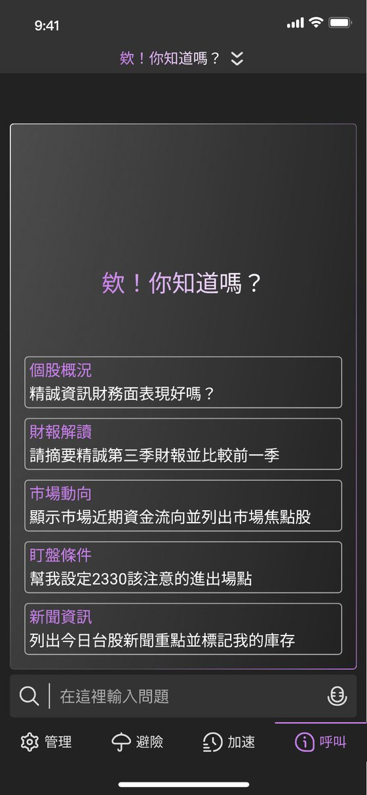
Initial draft UI
I studied Tiger Brokers' TigerGPT Q&A experience and European neobank bunq's conversational assistant "Finn," which reshaped how I thought about the trade-off between menu navigation and natural-language input.
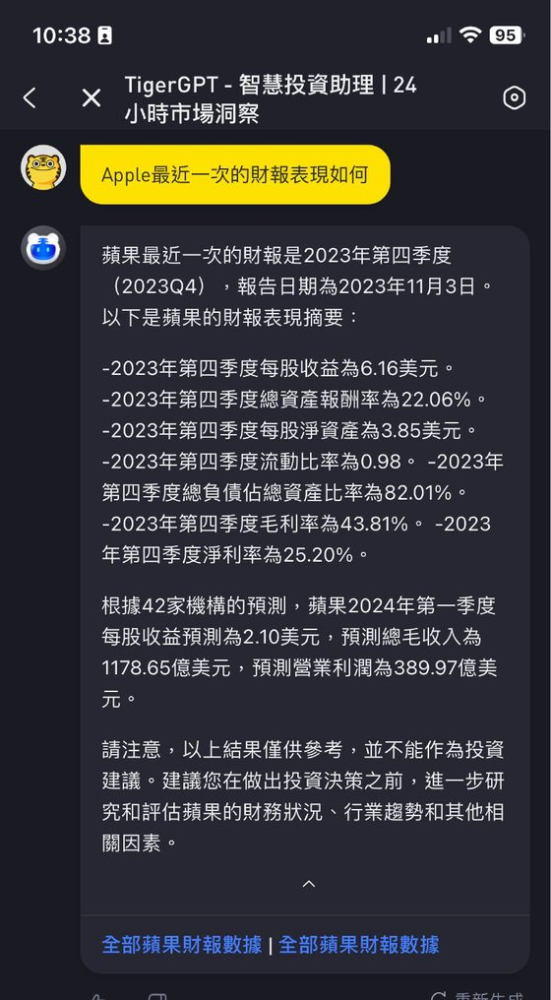
TigerGPT
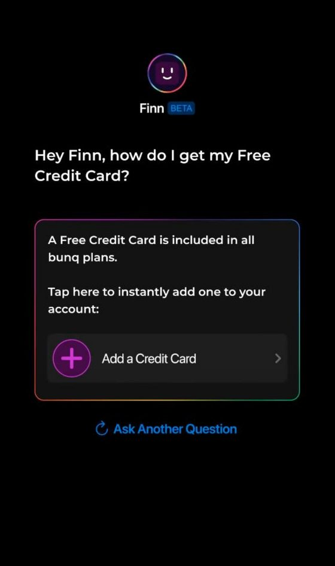
bunq — Finn
The final design de-emphasized menu navigation in favor of natural-language input and conversational depth — closer to how users actually want to ask a question, whenever it comes to mind.
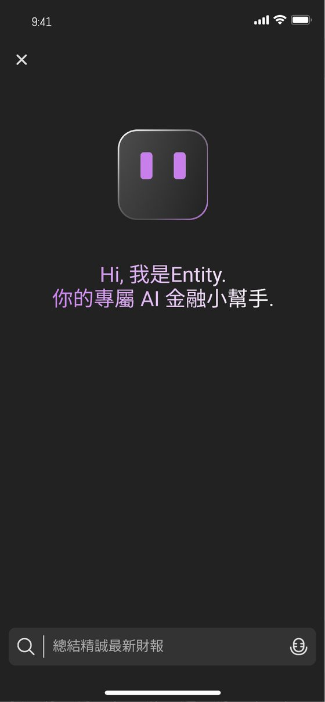
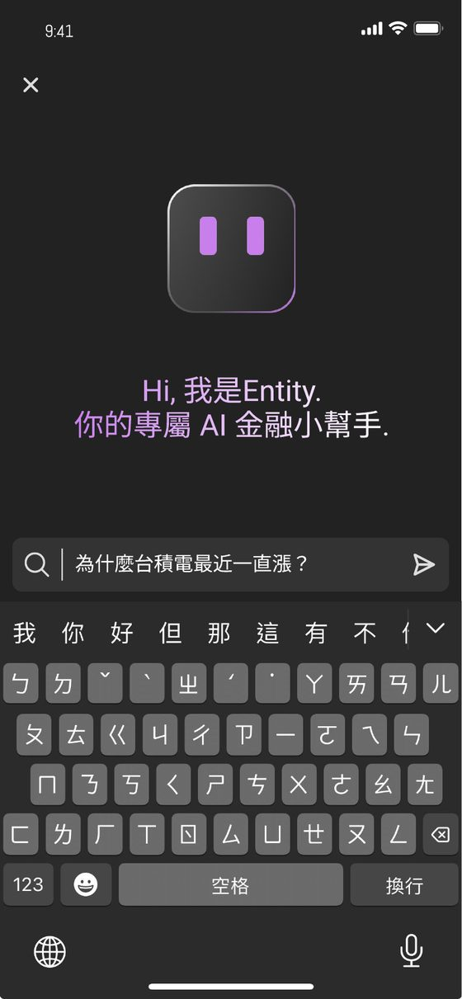
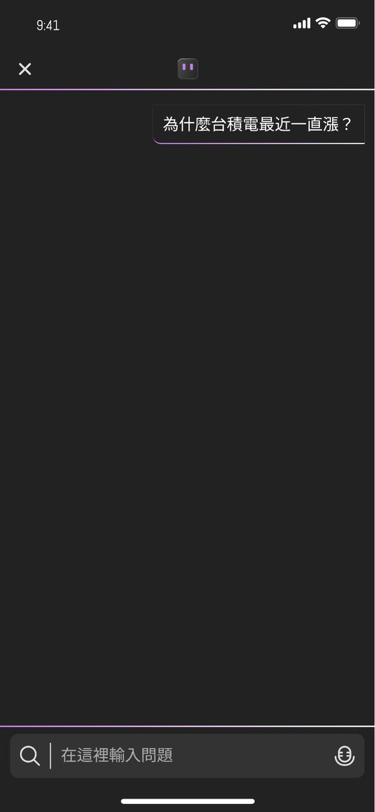
Core Features
Making every answer relevant to "my portfolio"
Whenever a user asks about a stock, Entity automatically checks it against their portfolio and surfaces the relevant position's gain or loss.
This feature came from my own experience as an investor — whenever I research a stock, what I care about most is always "does this affect what I already hold?" So when designing the product, I put myself in the user's shoes and built from that real need.
Why tabs instead of a single answer: this was driven by the brokerage's business needs. Alongside the AI's own analysis, the interface also surfaces the brokerage's in-house advisory view — building trust in the answer while reinforcing the user's reliance on that broker's service. It's a classic example of balancing end-user experience against a B2B client's commercial interests.
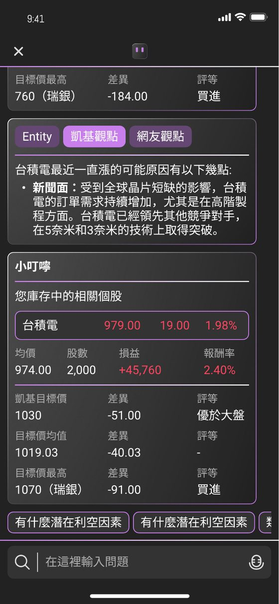
Understand a full earnings report in 30 seconds
Dense, hard-to-parse financial reports are translated into visualized financial statements — income statement, balance sheet, cash flow — so even non-professional investors can quickly grasp a company's financial health.
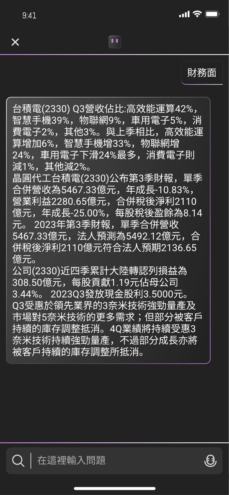
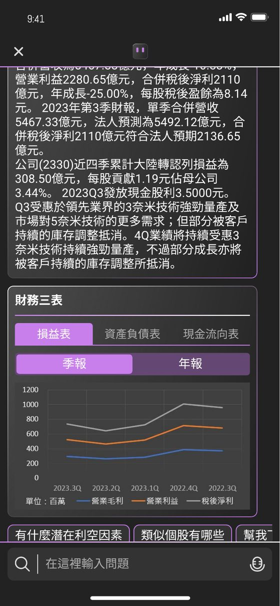
If you can say it, you can screen for it
Supports natural-language screening logic — from classic Warren Buffett-style criteria to compound technical conditions like "foreign institutional net buying over 2,000 lots with a KD golden cross" — all through plain conversational input.
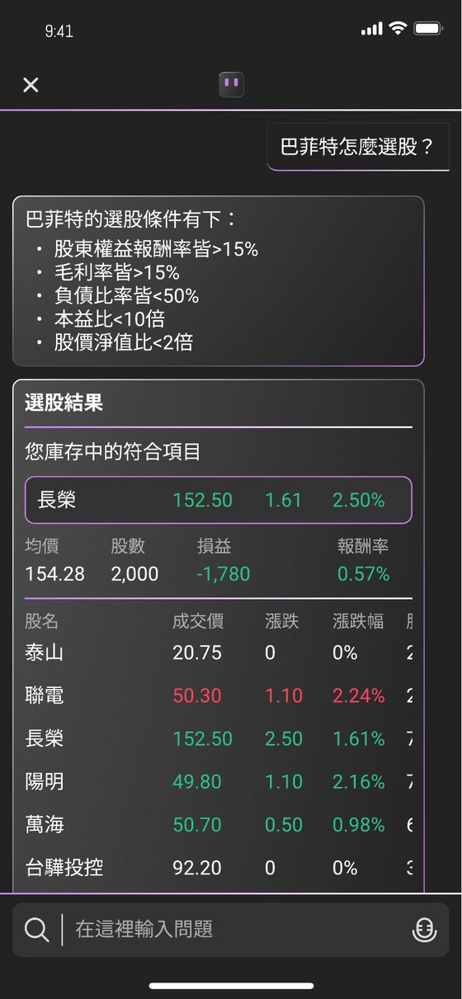
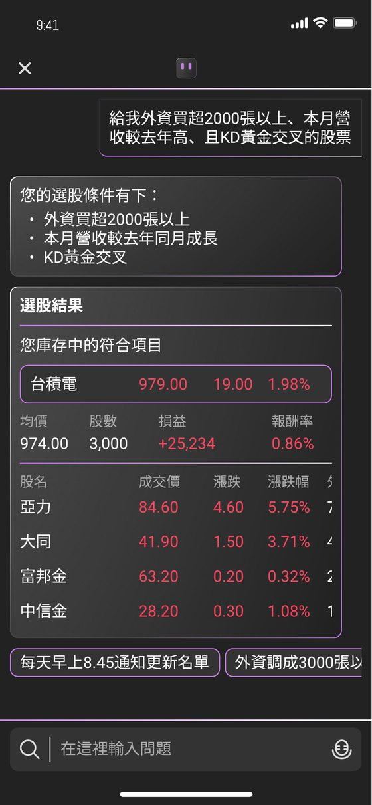
Technical Feasibility
To make the proposal more convincing, I also mapped out a complete technical architecture — from the data pool (market, industry, institutional, and personal data), through data processing and model training (built on ChatGPT), to the API service layer — and discussed feasibility directly with the engineering team.
This ensured every feature I promised in the proposal had a clear technical path behind it, not just a design vision. As a PM, I need to be able to lead and take part in these more technical architecture discussions.
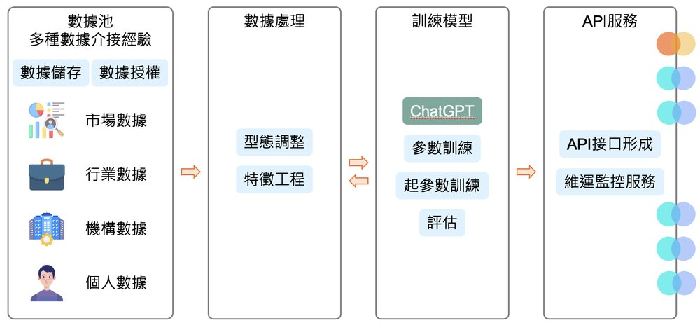
Outcome & Reflection
The proposal was ultimately not signed. But the process proved something important: building on six months of research and iteration, I was able to turn one month of direct client engagement into a complete proposal — backed by market evidence, user insight, visual design, and technical feasibility.
It also sharpened something I now see clearly: designing B2B fintech products always means answering both the end user's real needs and the client's commercial goals — miss either one, and the pitch won't truly land.
Systematically analyzed three real GenAI finance products to extract a differentiating insight: personal-asset integration
Led the full process alone — market research, strategic direction, interface design, and technical architecture
Made deliberate design trade-offs between user needs and the brokerage client's commercial goals